Pandas
Unfortunately, we are not talking about Pandas the animal here. Pandas is a fast, powerful, flexible and easy to use open-source data analysis and manipulation tool, built on top of the Python programming language.
The name is actually derived from the term “panel data”, an econometrics term for multidimensional structured data sets.
Python
You may be wondering what is Python? More animals? What is it with coding and animals?! Python is an interpreted, object-oriented, high-level programming language with dynamic semantics.
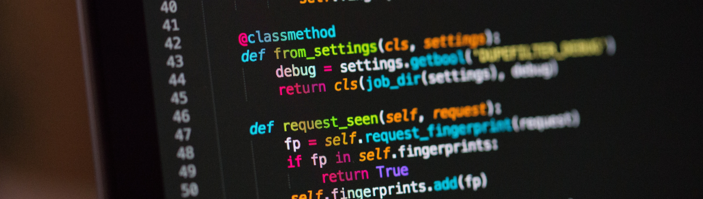Jupyter notebooks
Whilst it is cool to run full python scripts that complete allot of tasks, when completing data analysis or cleaning data, it is easier to execute our code section by section. We can then react easily to our results and adapt our code to explore different avenues based upon our findings. This is where Jupyter notebooks come in.

Set Up
We start off our code by importing our libraires we will need along with a few presentational formats.
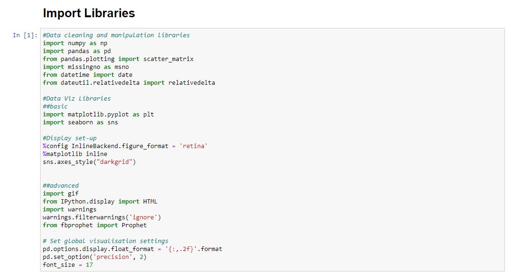Import and view our datasets
We exported our datasets from SQL in two tables. One which contains monthly housing data and the other contains the yearly data with many more columns. We can use df.head() to see a preview of our datasets quickly and easily.
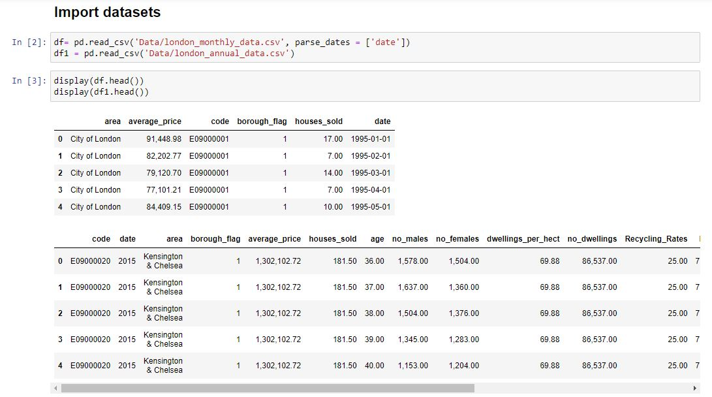Monthly Data
It’s always good to get an insight into our data before we start going about trying to clean anything. We can then get a good idea of what areas we need to focus on.
Looks like we have 14,355 rows of data, a mean house price of £275,571 and 3,834 houses sold in a month on one area. The maximum house price was £1,463,377.92 and 132,163 houses sold in a month in one area.
Our data looks pretty clean thanks to our work in SQL. The houses sold column looks to be the only one with missing values.
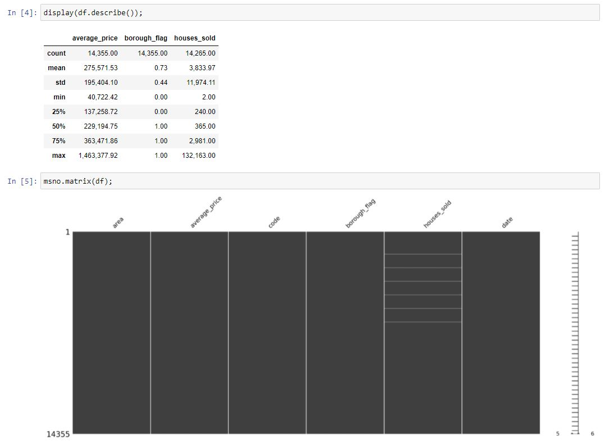We shall deal with the missing values by dropping the rows form the dataset. This is a task made simple with pandas.
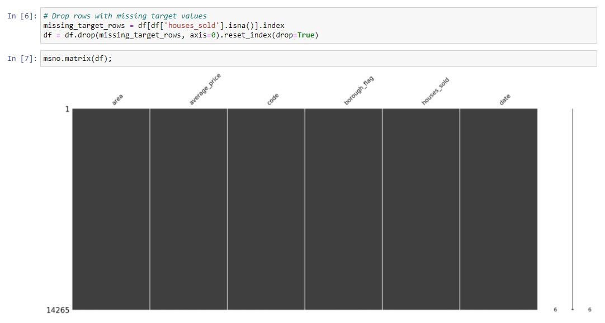We have now removed all missing data from our monthly dataset.
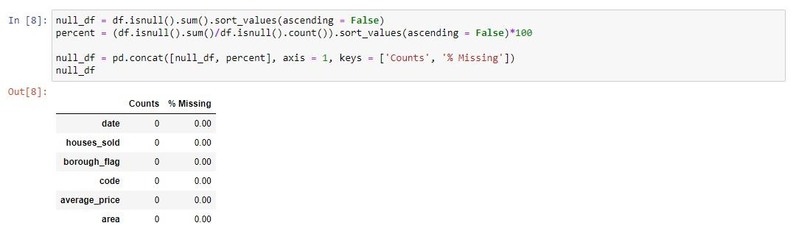Annual Data
We can start by getting a description of our data. There are allot columns here but to pick a few the average age seems to be what we’d expect 44, being around middle age telling us this column is likely to have a normal distribution. We can also tell our data is made up mostly of boroughs as our average borough flag is close to 1. We also have around 140,916 rows of data, that’s allot of data! How could we ever handle all this data -> pandas!
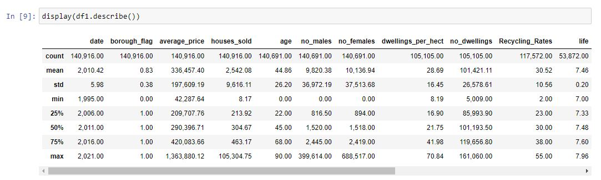This data contains allot more columns. As we combined our data using a LEFT OUTER JOIN, we know that all data in the furthest left columns will be fully complete. However, if there was no match in the table we joined, on the value we joined on, then we end up with a missing value. This is represented by a gap in our diagram.
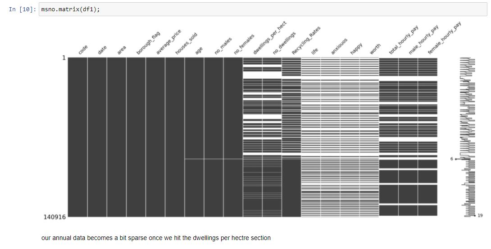We can arrange our missing values into a table and sort by the highest number of missing values. I explain why which columns we will drop at the bottom of this image. We are able to do this due to the ability to use markdown in Jupyter notebooks.
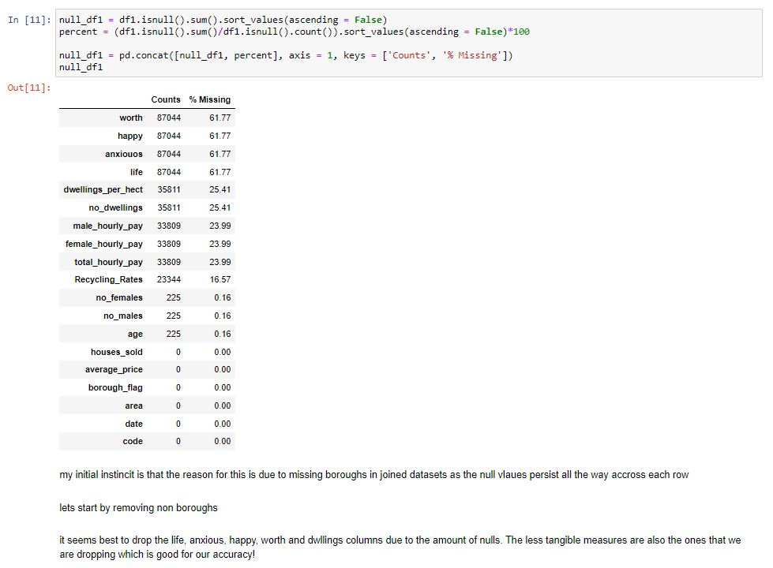Once we have dropped the value, we have outlined then we can reinspect our data. Our data looks much cleaner! Although we have lost around 25,000 rows of data, many of these were blank and hinder our EDA and machine learning models accuracy.
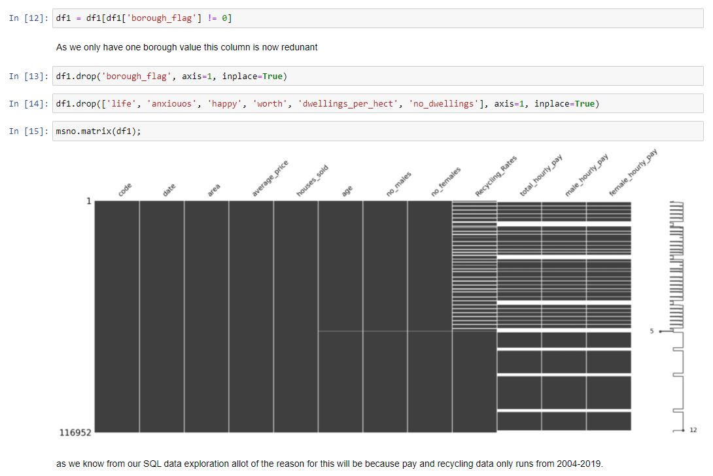To decipher why we still having missing values becomes an easier task due to our work in SQL. When performing the analysis for each dataset we examined the dates that each table covered. The columns which contain missing values, being recycling and pay, only run from 2004-2019.Whereas our data currently runs from 1995 until 2021. We shall drop the dates outside our matched date range.
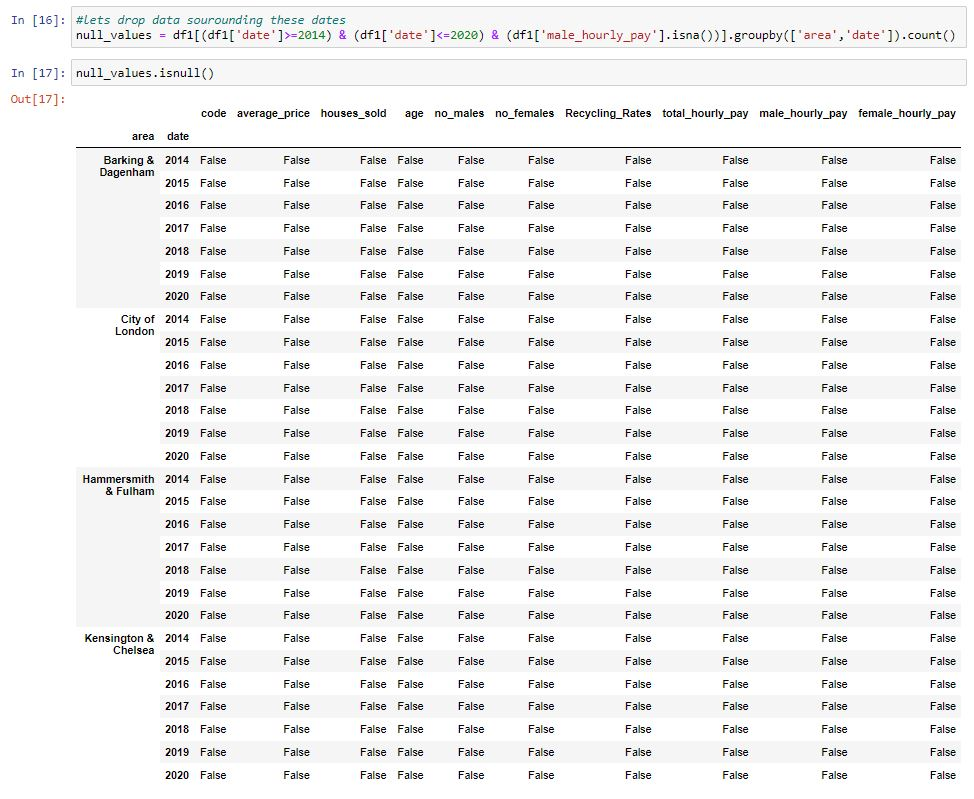We are also still to remove the boroughs which do not have a match. We can do this by running a search of the total hourly pay column. This returns a series and using this to produce the related unique values in the area column. We can then remove these boroughs from our dataset.
Now we have a very clean dataset with every row now containing a match in all other columns. This is perfect for our machine learning models and EDA. Our data now represents 29 boroughs for the data range 2014-2020.
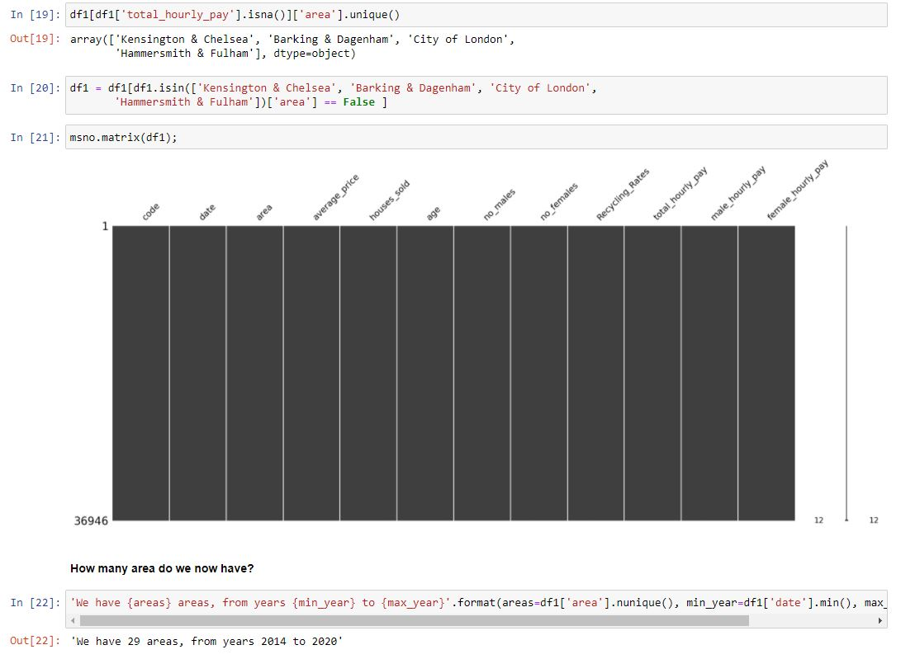